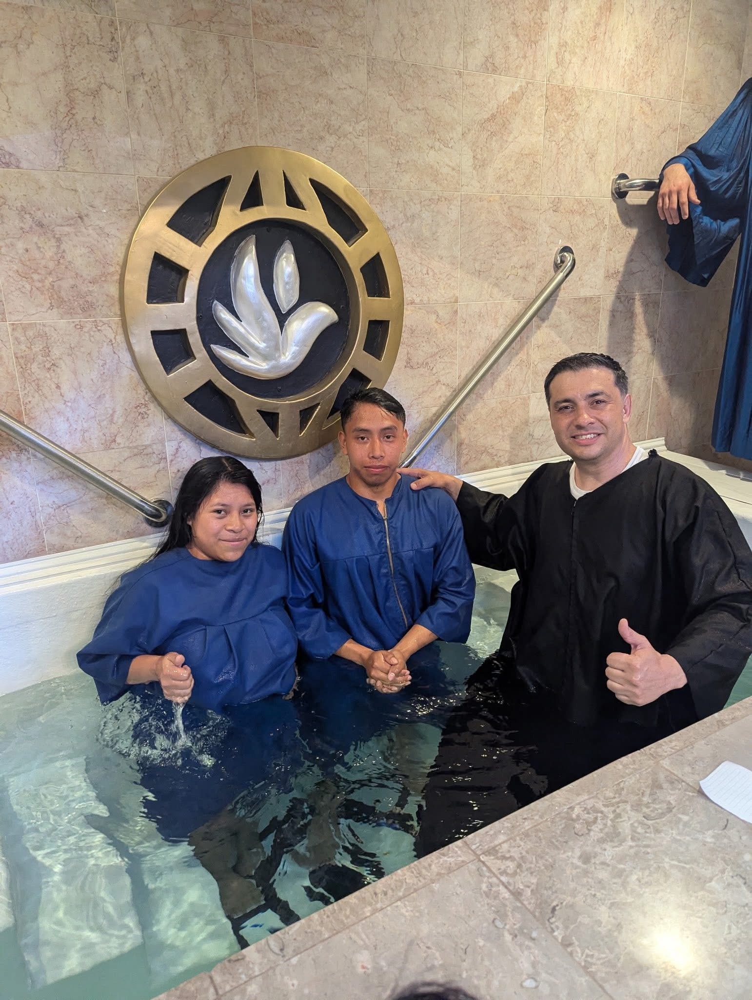
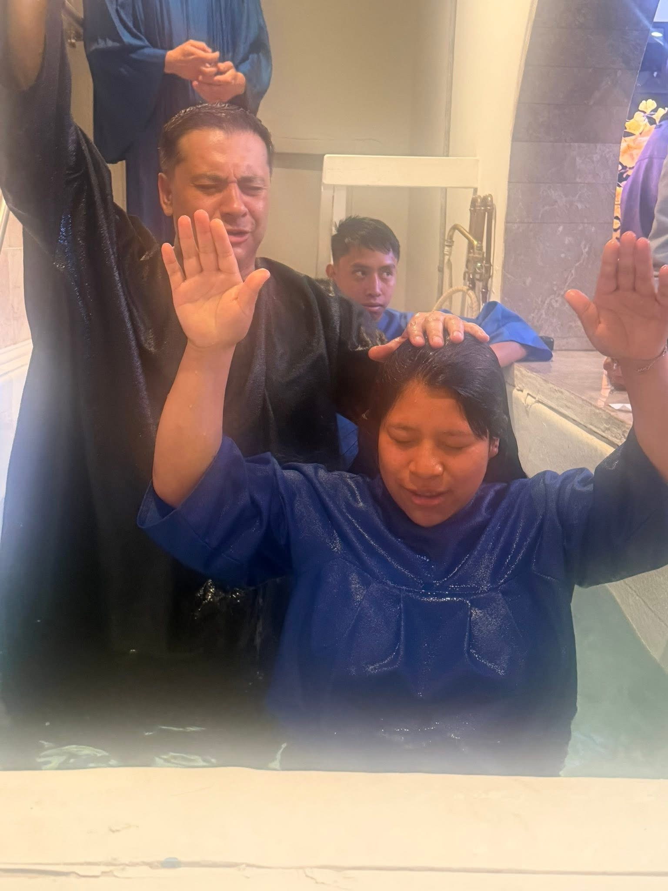
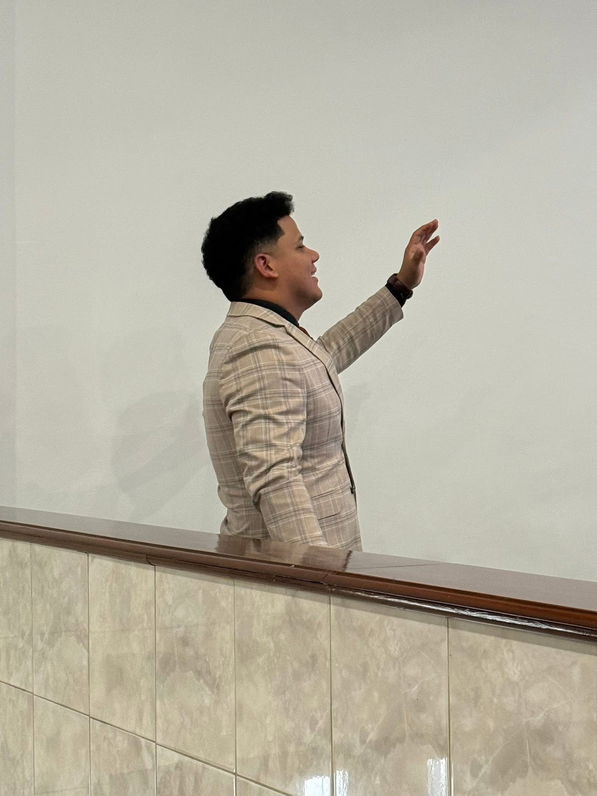
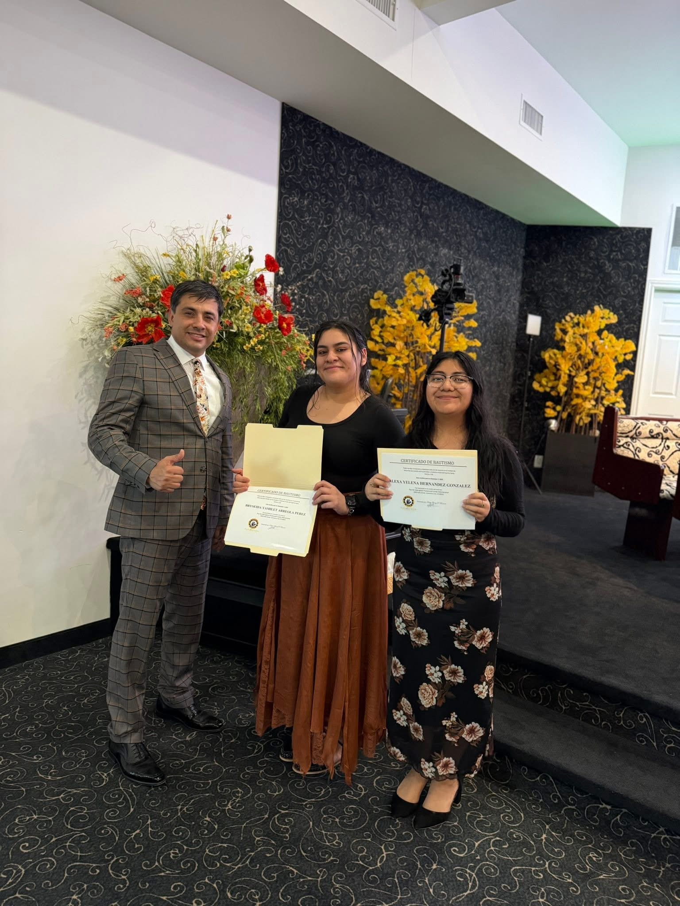
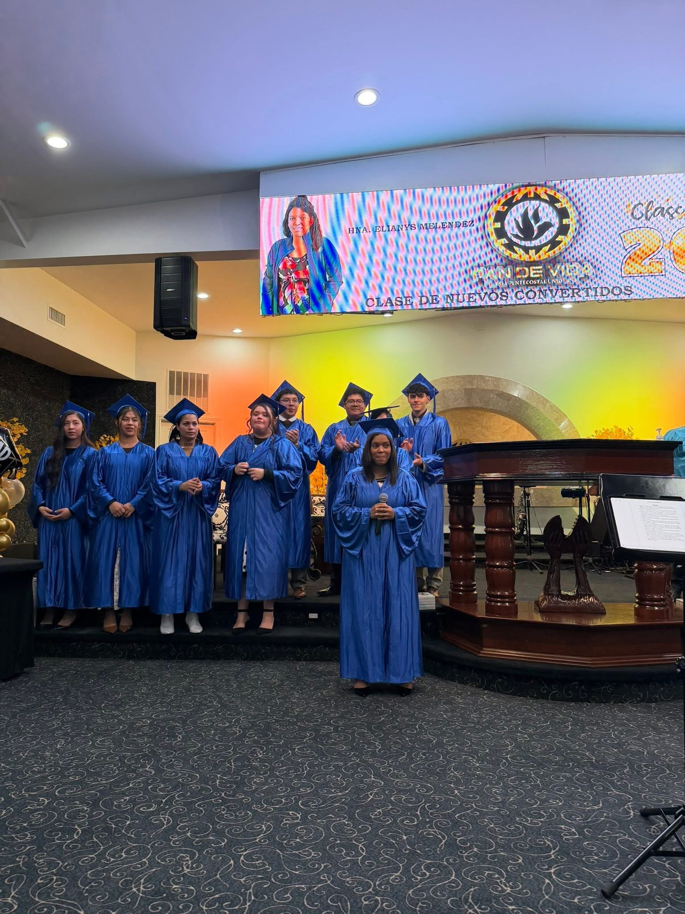

La vida en Pan De Vida
Adoración, bautismos, juventud, comunidad y celebraciones.










Mira nuestros servicios
Visita el canal oficial de YouTube para transmisiones y mensajes.
Adoración, bautismos, juventud, comunidad y celebraciones.





Visita el canal oficial de YouTube para transmisiones y mensajes.